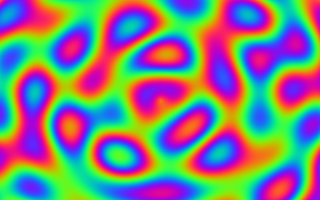
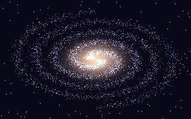
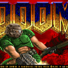
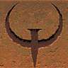
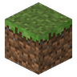
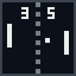
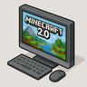

Галерея
PNG через stb_image: уменьшение с усреднением, скруглённые углы, тени. Нажмите на картинку.
Все · 12
Процедурные · 6
Паки движка · 6

Воксельный островИзометрические кубы по карте высот

ЗакатГрадиент неба, солнце и три гряды гор

Множество Мандельброта80 итераций, гладкая раскраска

ПлазмаСумма синусов — классика демосцены

ВолныТри источника интерференции

ГалактикаДве спиральные ветви, 5000 звёзд

Doomdoomgeneric на wasmrt, ~285–305 кадров/с в timedemo

Quakecanvas + GPU-палитра, timedemo 36–37 кадров/с

EaglercraftMinecraft 1.5.2: Java → TeaVM → wasm → Lua

PongПервая программа на C и vc.h

pc_wasmrtКомпьютер с «Windows XP» в мире
wasmrtРантайм: запуск wasm-программ по манифесту
Процедурные картинки сгенерированы скриптом tools/gen_site_images.py,
иконки — из паков content/*/icon.png, уменьшены до 96×96.